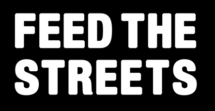

Our Service Partner

In the Fall 2022 semester, advocaSC decided to form a partnership with Feed the Streets, a
locally founded non-profit serving people in need through direct service. Every week, available
advocaSC members travel to Skid Row to help contribute and distribute food, water, clothes, and
other basic human needs.
We look forward to growing this
partnership over time to help expand and aggrandize the positive impacts Feed the Streets (and advocaSC)
have on our surrounding community. Currently, Feed the Streets operates a couple times a week in both
Skid Row and Hollywood, but we are working together to kickstart a third location in USC's South
Central neighborhood.